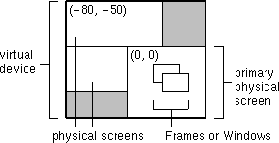

| CONTENTS | PREV | NEXT | Java 2D API |
With the release of the JavaTM 2 SDK, version 1.3, the Java 2DTM API supports three different multi-screen configurations that can possibly be configured by a native platform:
The Java 2D API enables you to create Frame, JFrame, Window, or JWindow objects with a GraphicsConfiguration to target a screen device for rendering.In all three configurations, each screen device is represented by a GraphicsDevice. A GraphicsDevice can have multiple GraphicsConfiguration objects associated with it.
When two or more screens are used to form a virtual device, a virtual coordinate system that exists outside of the physical screens is used to represent the virtual device. The bounds of each GraphicsConfiguration in this multi-screen configu ration are relative to the virtual coordinate system. One screen in this environment is identified as the primary screen, which is located at (0, 0) in the virtual coordinate system. Depending on the location of the primary screen, the virtual device mi ght have negative coordinates, as shown in Figure 2-10:

To determine if your environment is a virtual device environment in which a Window or a Frame can span two or more physical screens, call getBounds on each GraphicsConfiguration in your system and check to see i f the origin is something other than (0, 0). The getBounds method of a GraphicsConfiguration returns a Rectangle in the virtual coordinate system. So, if any of the origins are not (0, 0), your environment is a virtual d evice environment.In a virtual device environment, the coordinates of the GraphicsConfiguration objects are relative to the virtual coordinate system. So, you must use virtual coordinates when calling the setLocation method of a Frame or
Window. For example, this code sample gets the bounds of a GraphicsConfiguration and uses the bounds to set the location of a Frame at (10, 10) relative to the origin of the physical screen of the corresponding Graphic sConfiguration.
Frame f = new Frame(GraphicsConfiguration gc); Rectangle bounds = gc.getBounds(); f.setLocation(10 + bounds.x, 10 + bounds.y);
If the bounds of the GraphicsConfiguration are not taken into account, the Frame is displayed at (10, 10) on the primary physical screen, which might be different from the physical screen of the specified GraphicsConfiguration.The getBounds method can also be used to determine the bounds of the virtual device. Call getBounds on each GraphicsConfiguration in your system. To determine the bounds of the virtual device, calculate the union of all the bounds. This technique is used in the following sample.
Rectangle virtualBounds = new Rectangle();
GraphicsEnvironment ge =
GraphicsEnvironment.getLocalGraphicsEnvironment();
GraphicsDevice[] gs = ge.getScreenDevices();
for (int j = 0; j < gs.length; j++) {
GraphicsDevice gd = gs[j];
GraphicsConfiguration[] gc = gd.getConfigurations();
for (int i = 0; i < gc.length; i++) {
virtualBounds = virtualBounds.union(gc[i].getBounds());
}
}
The following applet creates a JFrame with every GraphicsConfiguration of every GraphicsDevice in the GraphicsEnvironment. Each JFrame displays a set of red, green and blue stripes, the screen number , the GraphicsConfiguration number and the bounds of the GraphicsConfiguration. This code sample must be run with the JavaTM 2 SDK, version 1.3 or later.
import java.applet.Applet;
import java.awt.*;
import javax.swing.*;
public class MultiFrameApplet extends Applet {
public MultiFrameApplet() {
main(null);
}
public static void main(String[] argv) {
GraphicsEnvironment ge =
GraphicsEnvironment.getLocalGraphicsEnvironment();
GraphicsDevice[] gs = ge.getScreenDevices();
for (int j = 0; j < gs.length; j++) {
GraphicsDevice gd = gs[j];
GraphicsConfiguration[] gc =
gd.getConfigurations();
for (int i=0; i < gc.length; i++) {
JFrame f =
new JFrame(gs[j].getDefaultConfiguration());
GCCanvas c = new GCCanvas(gc[i]);
Rectangle gcBounds = gc[i].getBounds();
int xoffs = gcBounds.x;
int yoffs = gcBounds.y;
f.getContentPane().add(c);
f.setTitle("Screen# "+Integer.toString(j)+",
GC# "+Integer.toString(i));
f.setSize(300, 150);
f.setLocation((i*50)+xoffs, (i*60)+yoffs);
f.show();
}
}
}
}
class GCCanvas extends Canvas {
GraphicsConfiguration gc;
Rectangle bounds;
public GCCanvas(GraphicsConfiguration gc) {
super(gc);
this.gc = gc;
bounds = gc.getBounds();
}
public Dimension getPreferredSize() {
return new Dimension(300, 150);
}
public void paint(Graphics g) {
g.setColor(Color.red);
g.fillRect(0, 0, 100, 150);
g.setColor(Color.green);
g.fillRect(100, 0, 100, 150);
g.setColor(Color.blue);
g.fillRect(200, 0, 100, 150);
g.setColor(Color.black);
g.drawString("ScreenSize="+
Integer.toString(bounds.width)+
"X"+ Integer.toString(bounds.height), 10, 15);
g.drawString(gc.toString(), 10, 30);
}
}